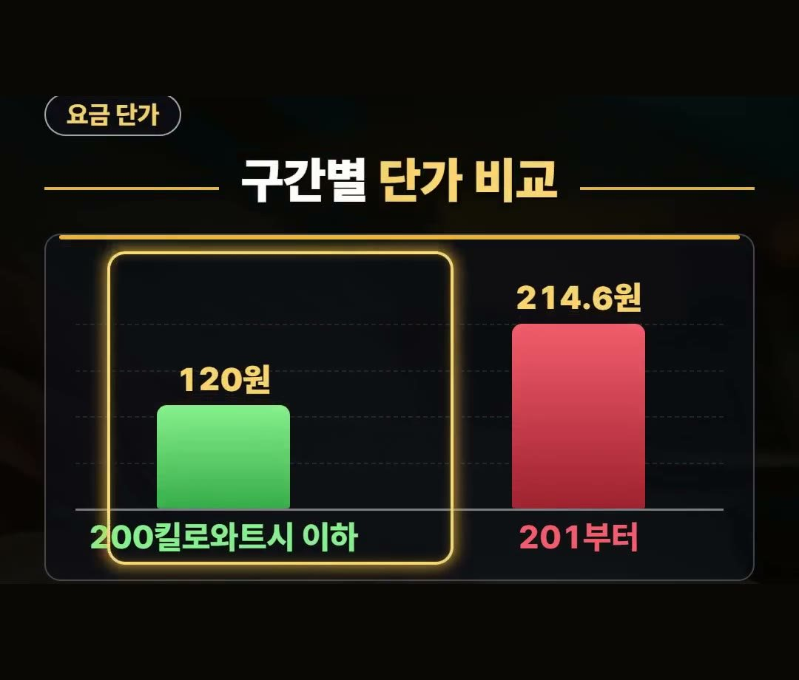
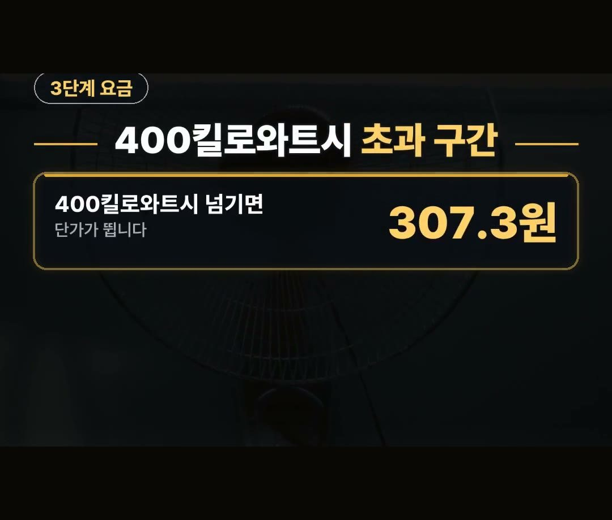
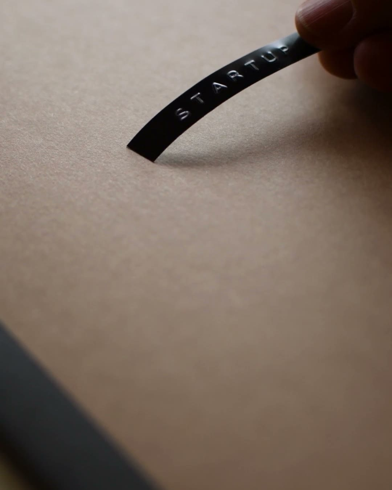
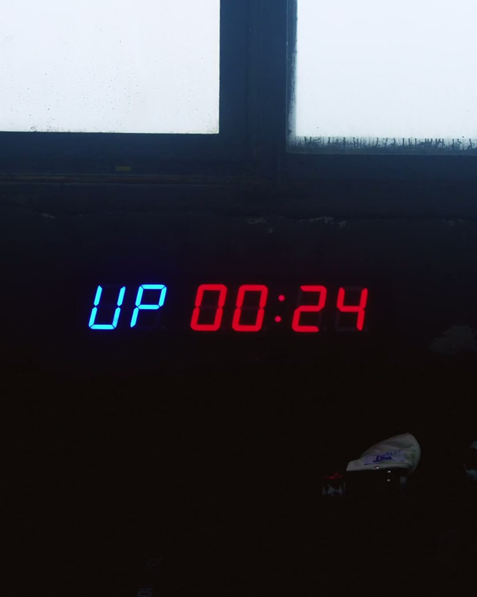

라디에이터 전기세, 누진세 요금 폭탄 피하는 법
※ 이 글에는 제휴 링크가 포함되어 있으며, 링크를 통해 구매하시면 일정 수수료를 받을 수 있습니다. (가격은 같습니다)
※ 이 포스팅은 쿠팡 파트너스 활동의 일환으로, 이에 따른 일정액의 수수료를 제공받습니다.
라디에이터를 켜 두면서도 라디에이터 전기세가 구간마다 단가가 달라진다는 점은 모르고 지나치는 분이 많아요.
누진세를 모른 채 쓰면 요금 폭탄을 맞을 수 있습니다.
이 글에서는 구간별 단가 숫자, 기기 명판에서 확인할 것, 타이머로 사용 시간을 줄이는 방법을 차분하게 정리했어요.
주택용 저압 전력량요금 단가만 모아서 정리해 봤어요.
200킬로와트시 이하는 120원, 201부터는 214.6원, 400킬로와트시를 넘기면 307.3원이라는 숫자를 기억하세요!
2,000와트를 하루 6시간 가동하면 360킬로와트시라는 예시도 같이요 ⚡
가정용 라디에이터 전기세, 구간별 단가부터 볼게요
라디에이터는 전열기구라서, 전기요금의 단가가 어떻게 달라지는지 먼저 알아 두면 도움이 돼요.
주택용 저압 전력량요금 단가는 쓰는 양에 따라 구간별로 올라갑니다.
가정용 라디에이터 전기세를 가늠할 때도 이 숫자들이 기준이 돼요.
- 200킬로와트시 이하: 120원
- 201킬로와트시부터: 214.6원
- 400킬로와트시 초과: 307.3원

표를 보면 구간이 올라갈수록 단가도 함께 올라가는 것을 알 수 있어요.
같은 라디에이터를 켜도 어느 구간에 들어가느냐에 따라 단가가 달라지니, 이 구조부터 알고 계시면 좋아요.
2,000와트를 하루 6시간 가동하면 360킬로와트시
예시를 하나 볼게요.
소비전력 2,000와트짜리 라디에이터를 하루 6시간 가동하면 360킬로와트시가 됩니다.
360은 200을 넘고 400에는 못 미치는 숫자예요.
그러니 이 예시만으로도 200킬로와트시 이하 구간(120원)을 지나, 201부터 적용되는 214.6원 구간에 들어서는 셈이에요.
라디에이터 한 대만으로도 이렇게 숫자가 커질 수 있다는 점이 포인트예요.
다른 전기제품까지 함께 쓰는 집이라면 더 신경이 쓰이겠죠.
400킬로와트시를 넘기면 단가가 307.3원까지

가장 조심해야 할 구간은 400킬로와트시를 넘기는 순간이에요.
이 구간부터는 단가가 307.3원까지 올라갑니다.
첫 구간의 120원과 비교하면 단가 차이가 꽤 커요.
- 첫 구간(200킬로와트시 이하): 120원
- 마지막 구간(400킬로와트시 초과): 307.3원
그래서 라디에이터를 쓸 때는 내가 지금 어느 구간에 있는지, 다음 구간까지 얼마나 남았는지를 생각해 보는 습관이 도움이 됩니다.
사용 전에 명판의 정격소비전력을 확인해 보세요

앞의 예시처럼 소비전력(와트) 숫자를 알면 하루에 몇 시간 쓸지 곱해서 대략 가늠해 볼 수 있어요.
그 숫자는 기기 명판에 적힌 정격소비전력에서 확인할 수 있습니다.
이미 쓰고 있는 제품이든 새로 살 제품이든 명판부터 살펴보세요.
확인할 항목을 간단히 적어 볼게요.
- 기기 명판 찾아보기
- 명판에 적힌 정격소비전력 확인하기
- 그 숫자에 하루 사용 시간을 곱해 보기
라디에이터 전기세 절약은 타이머로 사용 시간 줄이기

사용 시간을 줄이는 방법으로는 타이머를 활용하는 것이 있어요.
타이머로 사용 시간을 줄이면 누진세를 막는 데 도움이 됩니다.
2,000와트 예시에서 보았듯 가동 시간이 곧 킬로와트시로 이어지니, 켜 두는 시간을 관리하는 것이 가장 직접적인 방법이에요.
정리하면 순서는 간단해요.
명판에서 정격소비전력을 확인하고, 구간별 단가를 떠올린 뒤, 타이머로 가동 시간을 조절해 보세요.
정리
- 주택용 저압 전력량요금 단가는 200킬로와트시 이하 120원, 201부터 214.6원, 400킬로와트시 초과 307.3원으로 구간에 따라 올라가요.
- 2,000와트를 하루 6시간 가동하면 360킬로와트시예요. 명판의 정격소비전력부터 확인해 보세요.
- 타이머로 사용 시간을 줄이는 것이 누진세를 막는 방법이에요.
링크는 아래에 모아 두었어요.
📌 2026년 11월 기준 정보예요. 가격은 시기에 따라 달라질 수 있어요.
사진·영상: Pexels (Alef Morais, Artem Podrez, Dmitry Marchenkov, Eva Bronzini, Jakub Zerdzicki, Phát Trương)